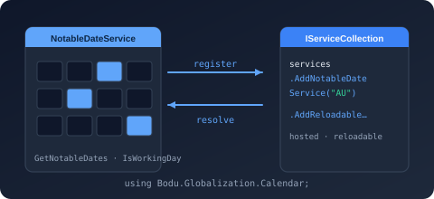

Class NotableDateServiceCollectionExtensions
Provides IServiceCollection extension methods for registering the Bodu notable-date service.

Bodu.Globalization.Calendar.DependencyInjection (package)
Purpose
The Bodu.Globalization.Calendar.DependencyInjection package provides the Microsoft.Extensions.DependencyInjection
integration for Bodu.Globalization.Calendar. It registers
INotableDateService as a singleton over a loaded
NotableDateResource (or a factory that produces one), so an ASP.NET Core application
— or any Microsoft.Extensions.*-style host — can inject the calendar service rather than composing
new NotableDateService(...) by hand.
The package is intentionally thin: a resource is an immutable, already-validated value, so registration takes the
resource (or a factory for it) directly, optionally with a NotableDateServiceOptions
carrying the service collaborators (algorithm registry, collision resolver, adjustment handlers, code-first providers).
There is no fluent builder — resource-level behavior is carried by the resource's <ResolutionPolicy>. Direct
construction continues to work for consoles, libraries, and tests that prefer not to bring in IServiceCollection.
There is no Bodu.Globalization.Calendar.DependencyInjection namespace: the package contributes exactly one public
type, this NotableDateServiceCollectionExtensions class, declared in the
Bodu.Globalization.Calendar namespace. Add using Bodu.Globalization.Calendar; to bring the extension methods into
scope on IServiceCollection.
Static documentation
- Introduction — the mental model, the full overload table, lifetimes and idempotency, headline types, and scenarios.
- Getting started — install, dependencies, and the plain, keyed, and reloadable samples with
appsettings.json, plus composing the caching decorator. - Calendar dependency injection guide — the complete walkthrough: factories, collaborators, the reloadable workflow, and lifetime semantics.
- Caching notable dates guide —
AddCachedNotableDateServiceand the durable backends that wrap these registrations.
The registration surface
All ten overloads are IServiceCollection extension methods on
NotableDateServiceCollectionExtensions; each returns the same collection for
chaining and throws ArgumentNullException for a null services, resource, factory, or key.
| Overload | Registers |
|---|---|
AddNotableDateService(IServiceCollection, NotableDateResource) |
A singleton INotableDateService over an already-loaded resource. |
AddNotableDateService(IServiceCollection, NotableDateResource, NotableDateServiceOptions?) |
The same, composed with the collaborators on NotableDateServiceOptions. |
AddNotableDateService(IServiceCollection, Func<IServiceProvider, NotableDateResource>) |
The resource is produced from the container when the service is first resolved — e.g. loaded from configuration or a data pack resolved through DI. |
AddNotableDateService(IServiceCollection, Func<IServiceProvider, NotableDateResource>, Func<IServiceProvider, NotableDateServiceOptions?>?) |
Factory registration with the collaborators also produced from the container; the options factory and its result may be null. |
AddNotableDateService(IServiceCollection, string serviceKey, NotableDateResource, NotableDateServiceOptions? = null) |
A keyed singleton, so a multi-tenant process registers one service per jurisdiction and resolves it with GetRequiredKeyedService<INotableDateService>(key) or [FromKeyedServices(key)]. |
AddNotableDateService(IServiceCollection, string serviceKey, Func<IServiceProvider, NotableDateResource>, Func<IServiceProvider, NotableDateServiceOptions?>? = null) |
The keyed registration with factory-produced resource and collaborators. |
AddReloadableNotableDateService(IServiceCollection, NotableDateResource) |
A singleton ReloadableNotableDateService together with a singleton MutableNotableDateResourceProvider (also exposed as INotableDateResourceProvider). Inject the mutable provider to call Reload(...); the live service picks up the new resource on its next query. |
AddReloadableNotableDateService(IServiceCollection, NotableDateResource, NotableDateServiceOptions?) |
The reloadable registration with collaborators propagated to each rebuilt inner service. |
AddReloadableNotableDateService(IServiceCollection, Func<IServiceProvider, NotableDateResource>, NotableDateServiceOptions? = null) |
The reloadable registration with the initial resource produced from the container. |
AddReloadableNotableDateService<TOptions>(IServiceCollection, Func<IServiceProvider, TOptions, NotableDateResource>, NotableDateServiceOptions? = null) where TOptions : class |
Driven by IOptionsMonitor<TOptions>: the factory runs for the initial load and again on every options change, and each rebuilt resource is swapped into the live service. A factory failure during a change is logged (EventId 4001) and leaves the previous resource in effect; a successful swap logs EventId 4002. |
INotableDateService is always a singleton, and every registration is idempotent (TryAdd semantics): a second
registration for the same service — or the same key — leaves the first in place. Keyed and unkeyed registrations are
independent, so both may coexist. Factories run lazily, on first resolution.
Minimal sample
using Bodu.Globalization.Calendar;
using Microsoft.Extensions.DependencyInjection;
// From a companion data pack (or NotableDateResourceLoader.Load(...) for your own document):
builder.Services.AddNotableDateService(AsiaPacificCalendarData.LoadResource("AU"));
// ... elsewhere, the resolved singleton is injected:
public sealed class HolidayController(INotableDateService calendar)
{
public IReadOnlyList<NotableDate> Year(int year) => calendar.Resolve(year, "AU-NSW");
}
Register one service per jurisdiction and resolve by key:
builder.Services.AddNotableDateService("US", AmericasCalendarData.LoadResource("US"));
builder.Services.AddNotableDateService("AU", AsiaPacificCalendarData.LoadResource("AU"));
public sealed class PayrollCalendar([FromKeyedServices("AU")] INotableDateService calendar);
To swap the rule set at run time, register the reloadable service and inject the mutable provider:
builder.Services.AddReloadableNotableDateService(EuropeCalendarData.LoadResource("GB"));
// later, when the rules change:
provider.Reload(NotableDateResourceLoader.Load(updatedXml, CommonNotableDateResources.Resolver));
Or let configuration drive the reloads through a bound options class:
builder.Services.AddOptions<CalendarOptions>().Bind(builder.Configuration.GetSection("Calendar"));
builder.Services.AddReloadableNotableDateService<CalendarOptions>((sp, options) =>
AsiaPacificCalendarData.LoadResource(options.Territory));
The Bodu.Globalization.Calendar.Caching decorator composes with any of
these: services.AddCachedNotableDateService(...), called after the registration it wraps, replaces the registered
INotableDateService with a caching decorator over it and observes the reloadable provider automatically. See the
Calendar dependency injection guide for the full walkthrough, including
the reloadable workflow and lifetime semantics.
Inherited Members
Namespace: Bodu.Globalization.Calendar
Assembly: Bodu.Globalization.Calendar.DependencyInjection.dll
Syntax
public static class NotableDateServiceCollectionExtensionsRemarks
The service is registered as a singleton because a NotableDateResource is immutable and the resolver
holds no shared mutable state, so a single instance can be shared across the application safely. Registrations are
idempotent (TryAdd semantics): when an INotableDateService — or, for the keyed overloads, a
service under the same key — is already registered, the call leaves the existing registration in place.
When to use. Use AddNotableDateService(IServiceCollection, NotableDateResource) when the resource is available at startup, the factory overloads when it must be built from other registered services, the overloads accepting a NotableDateServiceOptions when the service needs collaborators (a custom algorithm registry, collision resolver, adjustment handlers, or code-first providers), the keyed overloads when a multi-tenant process serves several jurisdictions side by side, and AddReloadableNotableDateService(IServiceCollection, NotableDateResource) when the data must be swapped at runtime without restarting the host.
Examples
// Register a service over a bundled data pack at application startup.
builder.Services.AddNotableDateService(AmericasCalendarData.LoadResource("US"));
// Or register one service per jurisdiction and resolve by key.
builder.Services.AddNotableDateService("US", AmericasCalendarData.LoadResource("US"));
builder.Services.AddNotableDateService("AU", AsiaPacificCalendarData.LoadResource("AU"));
public sealed class PayrollCalendar([FromKeyedServices("US")] INotableDateService notableDates)
{
public bool IsBankHoliday(DateOnly date) =>
notableDates.Resolve(date, "US").Any(n => n.Category == NotableDateCategory.BankHoliday);
}